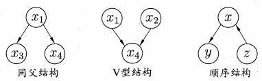

《机器学习》 西瓜书习题 第 7 章: 贝叶斯分类器
习题
7.1
试使用极大似然法估算西瓜数据集 $3.0$ 中前 $3$ 个属性的类条件概率.
极大似然法即计算如何才能使结果出现的可能性最大, 因此类条件概率为其在数据集里出现的概率, 即
$$
P(X = x\mid C = c) = \frac{|D_{X, x}|}{|D_{X, c}|}
$$
其中 $D_{X, x}$ 表示属性 $X$ 中取值为 $x$ 的集合, $D_{X,x}$ 表示属性 $X$ 中类别为 $c$ 的集合.
所以前 $3$ 个属性的类条件概率为
$$
\begin{align}
P(X = 青绿\mid C = 是) = \frac{3}{8}, P(X = 乌黑\mid C = 是) = \frac{4}{8}, P(X = 浅白\mid C = 是) = \frac{1}{8}\\
P(X = 青绿\mid C = 否) = \frac{3}{9}, P(X = 乌黑\mid C = 否) = \frac{2}{9}, P(X = 浅白\mid C = 否) = \frac{4}{9}\\
P(X = 青绿\mid C = 否) = \frac{3}{9}, P(X = 乌黑\mid C = 否) = \frac{2}{9}, P(X = 浅白\mid C = 否) = \frac{4}{9}\\
P(X = 蜷缩\mid C = 是) = \frac{5}{8}, P(X = 稍蜷\mid C = 是) = \frac{3}{8}, P(X = 硬挺\mid C = 是) = \frac{0}{8}\\
P(X = 蜷缩\mid C = 否) = \frac{3}{9}, P(X = 稍蜷\mid C = 否) = \frac{4}{9}, P(X = 硬挺\mid C = 否) = \frac{2}{9}\\
P(X = 浊响\mid C = 是) = \frac{6}{8}, P(X = 沉闷\mid C = 是) = \frac{2}{8}, P(X = 清脆\mid C = 是) = \frac{0}{8}\\
P(X = 浊响\mid C = 否) = \frac{4}{9}, P(X = 沉闷\mid C = 否) = \frac{3}{9}, P(X = 清脆\mid C = 否) = \frac{2}{9}
\end{align}
$$
7.2
试证明: 条件独立性假设不成立时, 朴素贝叶斯分类器仍有可能产生最优贝叶斯分类器.
原书 $\mathrm p.164$
若属性间依赖对所有类别影响相同, 或依赖关系的影响能互相抵消, 则属性条件独立性假设在降低计算开销的同时不会对性能产生负面影响 $[\mathrm{Zhang}, 2004].$
7.3
试编程实现拉普拉斯修正的朴素贝叶斯分类器, 并以西瓜数据集 $3.0$ 为训练集, 对 $\mathrm p.151$ “测 $1$” 样本进行判别.
https://aistudio.baidu.com/aistudio/projectdetail/261652
7.4
实践中使用式 $(7.15)$ 决定分类类别时, 若数据的维数非常高, 则概率连乘 $\prod_{i = 1}^{d}P(x_i\mid c)$ 的结果通常会非常接近于 $0$ 从而导致下溢. 试述防止下溢的可能方案.
遇到问题, 要多查书. 书里其实已经给了解决方案, 那就是取对数.
7.5
试证明: 二分类任务中两类数据满足高斯分布且方差相同时, 线性判别分析产生贝叶斯最优分类器.
我们先分析 $\mathrm{LDA}$ , 两类数据都满足高斯分布并且方差相同, 于是两类数据的形状是一样的, 只是所处位置不同. $\mathrm{LDA}$ 需要将样本中心的间隔最大化, 并且无论数据投影在哪一条直线上样本内方差都是一样的 (因为是个圆) , 所以应该会投射在一个与两个样本中心的连线平行的直线上 (此时样本中心相距最远). 在样本中心的连线的中点是两个类的分割点.
而贝叶斯会将在某个位置出现的点分成最可能的类, 这个最可能我们用样本来估计它的概率. 根据高斯分布, 距样本中心越远点的分布越少, 相应的概率也变小, 那么分界线在哪呢? (就是刚刚好分成 $1$ 类的概率是 $50%$, $0$ 类的概率也是 $50%$) 其实也是样本中心连线的中点, 更准确的说是过该点与样本中心连线的直线垂直的平面, 因为该平面上每一点与两个样本中心的距离都是相同的.
因此线性判别分析与贝叶斯产生了相同效果的分类界限, 于是它们是等价的.
7.6
试编程实现 $\mathrm {AODE}$ 分类器, 并以西瓜数据集 $3.0$ 为训练集, 对 $\mathrm p.151$ 的 “测 $1$” 样本进行判别.
https://aistudio.baidu.com/aistudio/projectdetail/261652
7.7
给定 $d$ 个二值属性的二分类任务, 假设对于任何先验概率项的估算至少需 $30$ 个样例, 则在朴素贝叶斯分类器式 $(7.15)$ 中估算先验概率项 $P(c)$ 需 $30\times 2 = 60$ 个样例. 试估计在 $\mathrm{AODE}$ 式 $(7.23)$ 中估算先验概率项 $P(c, x_i)$ 所需的样例数 (分别考虑最好和最坏情形).
$$
P(c\mid \boldsymbol{x}) \propto \sum_{\begin{array}{c}\scriptstyle i = 1\\\scriptstyle|D_{x_i}|\geqslant m’ \end{array}}^{d}P(c, x_i)\prod_{j = 1}^d P(x_j\mid c, x_i)\tag{7.23}
$$
最好情形就是 $60$ 个了, 即 $x_i$ 只有两种取值并且和 $c$ 一起出现, 也就是
$$
P(c) = P(c, x_i)
$$
最坏情形则为 $30\times 2 \times i$ 个, 即每种情况各有 $30$ 个样例, 由于有两类, $i$ 个取值, 所以一共有 $2 \times i$ 种情况, 因此就为 $30\times 2 \times i$ 个.
7.8
考虑图 $7.3$ , 试证明: 在同父结构中, 若 $x_1$ 的取值未知, 则 $x_3\perp !!! \perp x_4$ 不成立; 在顺序结构中, $y \perp z \mid x$, 但 $y \perp !!! \perp z$ 不成立.
在这里我就不得不得吐个槽, $\perp !!! \perp$这个符号实在是太难找, 只能用两个 $\perp$ 重叠来替代 (所以如果见到两个接着的 $\perp$ 不要奇怪).

这里要用到的重要式子是
$$
P_B(x_1, x_2, \dots, x_d) = \prod_d^{i = 1}P_B(x_i\mid \pi_i) = \prod_{i = 1}^d \theta_{x{_i}\mid\pi_i}\tag{7.26}
$$
对同父结构来说, 由于 $x_1$ 已知, 我们设 $x_1 = x$ 因此 $P(x_1 = x) = 1$, 因此有
$$
\begin{aligned}
P(x_1 = x, x_3, x_4) &= P(x_3\mid x_1 = x)P(x_4\mid x_1 = x)P(x_1 = x)\\
P(x_3, x_4) &= P(x_3)P(x_4)
\end{aligned}
$$
即 $x_3 \perp x_4 \mid x_1$ .
而如果 $x_1$ 未知, 那么同样的有
$$
P(x_1, x_3, x_4) = P(x_3\mid x_1)P(x_4\mid x_1)P(x_1)
$$
$$
\begin{aligned}
P(x_3, x_4) &= \sum_{i = 1}^mP(x_1 = x_1^i, x_3, x_4)\\
&=\sum_{i = 1}^mP(x_3\mid x_1 = x_1^i)P(x_4\mid x_1 = x_1^i)P(x_1 = x_1^i)
\end{aligned}
$$
其中 $m$ 是 $x_1$ 可能的取值数, $x_1^i$ 是 $x_1$ 第 $i$ 个取值.
$$
P(x_3) = \sum_{i = 1}^mP(x_3\mid x_1 = x_1^i)\\
P(x_4) = \sum_{i = 1}^mP(x_4\mid x_1 = x_1^i)\\
$$
$$
\because \left[\sum_{i = 1}^mP(x_3\mid x_1 = x_1^i)\right]\left[\sum_{i = 1}^mP(x_4\mid x_1 = x_1^i)\right] \geqslant \sum_{i = 1}^mP(x_3\mid x_1 = x_1^i)P(x_4\mid x_1 = x_1^i)
$$
且
$$
P(x_1 = x_1^i) \leqslant 1
$$
$$
\begin{aligned}
\therefore \left[\sum_{i = 1}^mP(x_3\mid x_1 = x_1^i)\right]\left[\sum_{i = 1}^mP(x_4\mid x_1 = x_1^i)\right] &\geqslant \sum_{i = 1}^mP(x_3\mid x_1 = x_1^i)P(x_4\mid x_1 = x_1^i)P(x_1 = x_1^i)P(x_1 = x_1^i)\\
P(x_3)P(x_4) &\geqslant p(x_3, x_4)
\end{aligned}
$$
当且仅当 $x_1$ 已知时取等, 即 $x_1$ 未知时, $x_3\perp !!! \perp x_4$ 不成立.
对于顺序结构来说, 我们用同样的方法去证明.
若 $x$ 取值已知且值为 $a$, 则有
$$
P(x = a) = 1
$$
$$
\begin{aligned}
\therefore
P(x, y, z) &= P(y\mid x)P(x\mid z)P(z)\\
P(y, z)&= P(y) \times 1 \times P(z) = P(y)P(z)
\end{aligned}
$$
即 $y \perp z \mid x$
当 $x$ 取值未知时
$$
\begin{aligned}
P(y, z) &= \sum_{i = 1}^mP(x = x_i, y, z)\\
&=\sum_{i = 1}^mP(y\mid x = x_i)P(x = x_i\mid z)P(z)\\
&=P(z)\sum_{i = 1}^mP(y\mid x = x_i)P(x = x_i\mid z)
\end{aligned}\\
P(y) = \sum_{i = 1}^mP(y\mid x = x_i)\\
\because P(x = x_i\mid z) \leqslant 1
$$
其中 $m$ 为 $x$ 取值数量, $x_i$ 为 $x$ 的第 $i$ 个取值.
$$
\therefore
\begin{aligned}
\sum_{i = 1}^mP(y\mid x = x_i) &\geqslant \sum_{i = 1}^mP(y\mid x = x_i)P(x = x_i\mid z)\\
\sum_{i = 1}^mP(y\mid x = x_i)P(z) &\geqslant P(z)\sum_{i = 1}^mP(y\mid x = x_i)P(x = x_i\mid z)\\
P(y)P(z)&\geqslant P(y, z)
\end{aligned}
$$
当且仅当 $x$ 已知时取等, 即 $x$ 未知时, $y\perp !!! \perp z$ 不成立.
7.9
以西瓜数据集 $2.0$ 为训练集, 试基于 $\mathrm{BIC}$ 准则构建一个贝叶斯网.
https://aistudio.baidu.com/aistudio/projectdetail/261652
7.10
以西瓜数据集 $2.0$ 中属性 “脐部” 为隐变量, 试基于 $\mathrm{EM}$ 算法构建一个贝叶斯网.